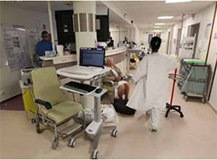

Dordogne
Les urgences classiques sont moins fréquentées depuis cinq semaines.
Les urgences classiques sont moins fréquentées depuis cinq semaines. PHOTO ARCHIVES JEAN-CHRISTOPHE SOUNALET /« SUD OUEST »
COVID-19 - Tous les signaux montrent que la circulation du virus reste faible en Périgord. Cela a été confirmé par l'hôpital de Périgueux, hier
Sans grande surprise, la Dordogne devrait être classée en zone verte, le département figurant parmi les territoires peu touchés par l'épidémie. Interrogés lors de la conférence de presse qu'ils ont tenue, mercredi 29 avril, le directeur de l'hôpital de Périgueux, Thierry Lefebvre et le chef du service des maladies infectieuses, Bernard Castan, ont confirmé ce scénario. Depuis le début de la crise sanitaire, le centre hospitalier constate que la circulation du virus est faible. "Nous avons entre 30 et 40 % de hausse de l'activité aux urgences liée au coronavirus mais les tests donnent une faible positivité", indique Jean-Paul Lorendeau, le responsable du Smur24. Au sein même de l'hôpital, le dernier dépistage d'envergure a révélé un seul cas positif pour 85 testés.
Une mortalité en baisse
Le confinement aurait ainsi joué son rôle de "pare-feu majeur". D'ailleurs, le nombre d'hospitalisations liées au Covid-19 continue de diminuer : un seul patient est placé sous assistance respiratoire, deux autres devraient sortir de réanimation dans les prochains jours. Malgré 20 décès à déplorer, le département reste préservé. À tel point que la mortalité connaît une baisse importante par rapport à la même période en 2019 et 2018.